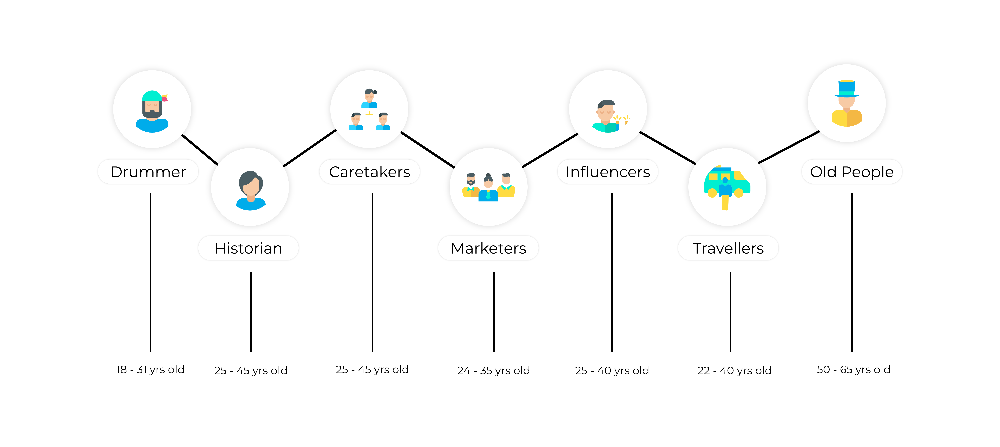
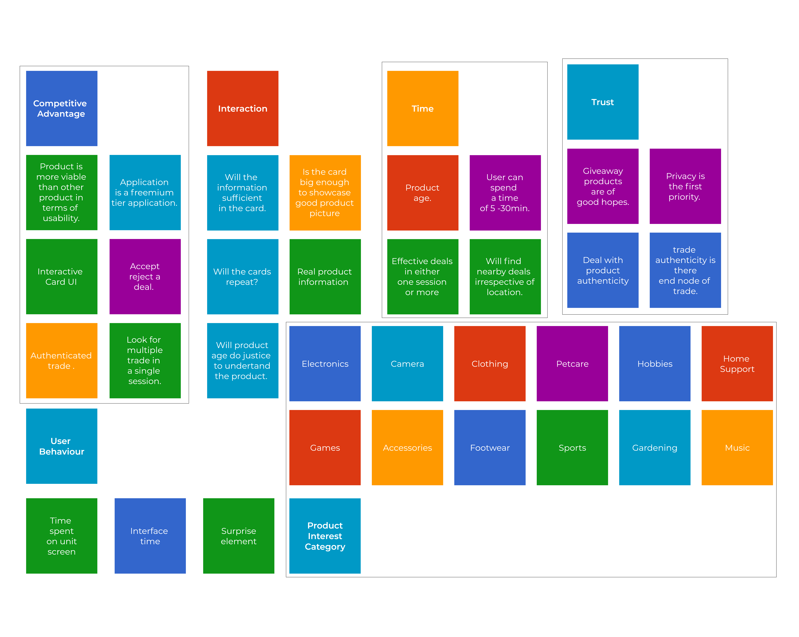
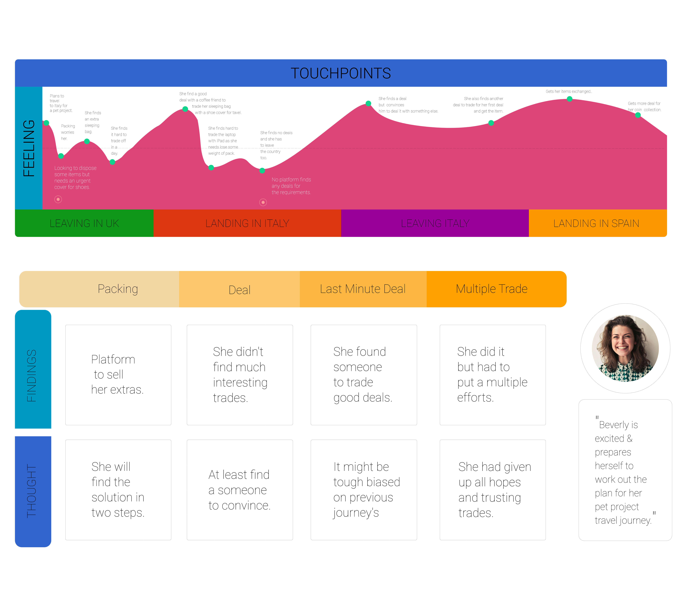
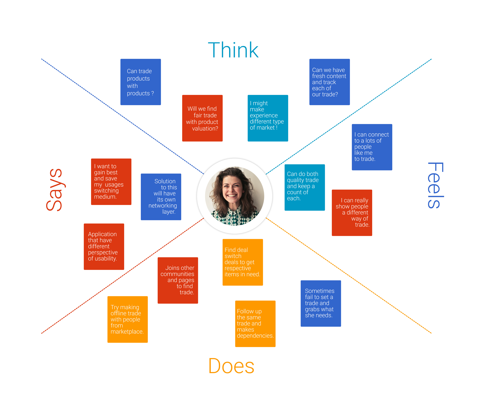
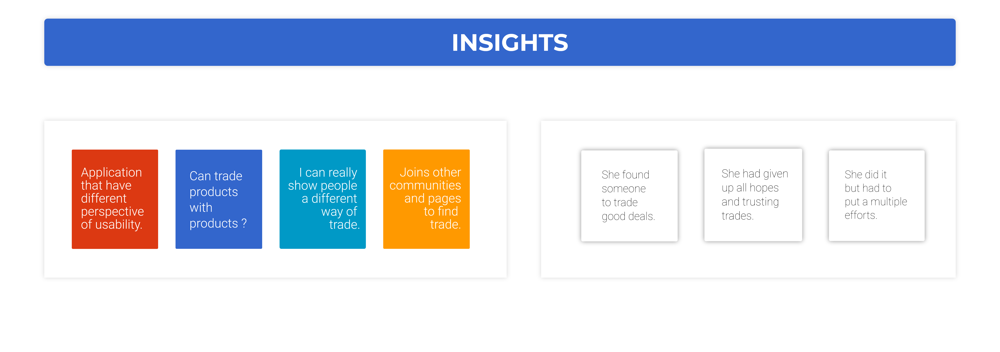

m-Commerce Application
skills:User Research, Secondary Research, Empathy & Insights,
Application Architecture, Use Cases, Mo-Fi Wireframes,
Interface Design Guide
Adobe XD, Adobe Photoshop
Introduction
In Today's world, the mobile-commerce platform is a boost to the business industry as suggested by a study and research towards mobile apps (Ngai and Gunasekaran, 2007). As the concept of barter is long lost but is still used by some companies with a different approach and some valuation. This project mostly focusses on exchanging used products and some items which you enlist or keep in your stock room as a giveaway.
Project Timeline (6 Weeks)
Aim & Objective
To design a card-based user interface with minimal action and long-term surfing with fresh content on each screen session.
The user needs to self-evaluate what to exchange and what not from the listing, looking upon the display product and keeping in mind the need for product and interest towards owning the product. The user can also save the card to review it later. The user can also skip the product and look for the next product. The actions defined are swiping the product card towards the right and left to accept and reject (the actions are not defined as per any standards as the product allows the user to choose the action to accept and reject swipe direction).
Secondary Research
The target user group is a focused audience as they have most experience using products and items those have small life span or are aged enough to be traded to be a part of a collection. The user surveys were conducted with a set of 12 people and out of the 10 are frequent internet user from last 6 years. The survey predicts that barter can maintain a sustainable market place. The section those don’t remember also accounts as a neutral section of the practice, and this accounts that majority of participants have come across some card-based UI. Along with this data to categorise the interest and keep an interest on peak number for crisis management. As the last argument suggests that large number of users practice the tap action much voluntarily.

Product Ergonimics
The user interface works on the element of surprise and hence the product information will be flashed and the user will have micro information e.g. Product image, age and user name of the reciprocal user. The host user needs to look upon own inventory to look at a product to barter with the product on the card. The product matching will be achieved as the user can manually filter the category of product it wants to swap, e.g. A and B are two users where A is the primary user and B is the secondary user (reciprocal user you are trading with). Now A has a mobile phone, aviators and a leather jacket (each product is a used product) and B has a tablet, now A can decide what to trade the tablet, this is explained with certain scenarios below:
1. A can trade just the mobile phone with B for the tablet.
2. A can trade with either two or all three of the product.
3. A can also dig in the inventory for other products which are not in the home screen inventory listing (primary listing)
- What will happen after A swipes?
-
After the action B will receive a swipe request approval and can browse the all the primary listed products with A and can ask for other products instead of the primary swiped product.
- How will the swiped product disappear from the inventory listing?
-
Once A and B agree to the exchange products with each other in the message they can initiate the exchange action in the message with date, time and location. So there will be location pocket generated in maps. Now A & B needs to meet at the location. After they exchange the product the product will be discarded from the inventory to trash.
- How to measure the quality assurance of the trade?
-
Once A decides to exchange an item with B at a location X. When both A & B reach X then they will receive a notification which will redirect to the respective screens and one of them will have Q&R code and other needs to scan the code before or after trade.
Affinity Mapping
This is a application review for a compititor application, where users are more happy to share products for free as a give-away. Some comments speak of not finding a trade nearby, but most of the users followed all the changes and adaptation made by the platfrom and liked it. The application has 50K users and counting. Its an iOs mobile app. Similar to most of the feature TradeMade is distinct with not just trading products but also services in return of products and vice versa. But the insights and analytics derived looking at the user feedbacks, most of the users have a positive review, then positive neutral. As all comments were checked using NLP for text of StanfordNLP, which was a great help.
Persona
The need of persona is to prepare an imaginary perspective of attributes that our end user will have. And derive all the pain-points needs and other dependency factors. It also helps connecting the loopholes and pain-points of the user. The loopholes of the users are the tiring approach of browsing the application which is a challenge itself.
User Journey
Empathy Mapping
 Aplication Architecture
The architecture and usecase gives a better overview that each user interaction senario. And hence helps to analyze the interaction elements and test the userflow using wireframe.